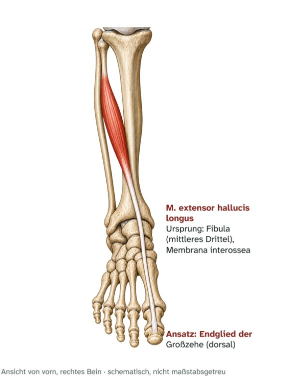

Vordere Unterschenkelmuskeln
M. extensor hallucis longus
Langer Großzehenstrecker – Ursprung, Ansatz, Innervation und Funktion
Zu diesem Muskel gibt es noch kein eigenes Video.

Steckbrief
Steckbrief
- Ursprung
- Innenfläche der Fibula (mittleres Drittel), Membrana interossea
- Ansatz
- Endglied der Großzehe (Oberseite)
- Innervation
- N. fibularis profundus (L5)
Funktion
- Großzehe: Streckung.
- Oberes Sprunggelenk: Dorsalextension.
Zum Lernen

E-Book · Band 1 · 19,90 €
Muskel-Atlas Hüfte & Bein
Im E-Book findest du zu diesem Muskel außerdem:
- Merkhilfe und typische Prüfungsfalle
- Muskelfunktionstest, Längentest und Übungen per Video-QR-Code
- Dehn- und Kräftigungsübung
- Kurz-Check mit drei Fragen und Lösungen